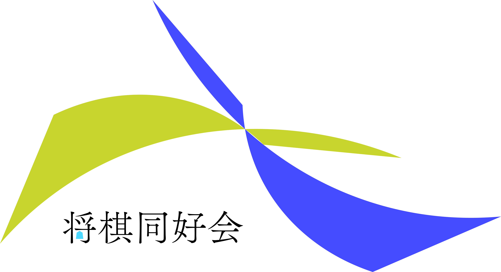
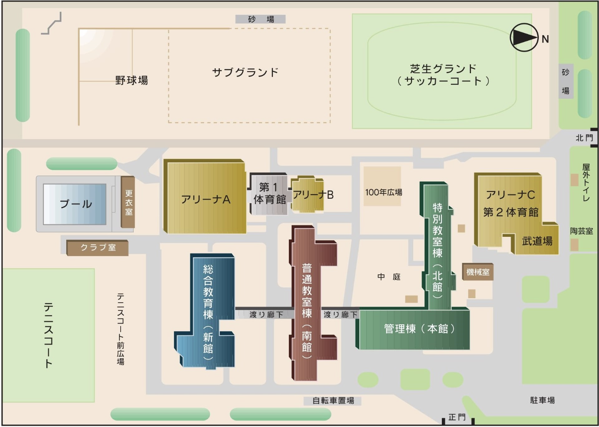

 本校公式サイト
本校公式サイト
JP / EN


将棋同好会
部長: TK / 副部長: TS / 会計: KO
私たち将棋同好会は、部員24名で毎週木曜日と第2・第4水曜日に活動しています。普段は静かな和室でパチリと駒を響かせていますが、
今年の学園祭は一味違います！例年の学園祭では、お馴染みの和室で「フリー対局スペース」を出店していましたが、今年からは心機一転、
場所を【総合教育棟のゼミ2教室】へと移動します。「和室の将棋部はちょっと敷居が高いな……」と感じていたそこのあなた！
今回は教室というオープンな空間を活かし、将棋盤に触ったことがない完全初心者の方から、駒の動きなら任せろという方、
そして部員を唸らせるほど腕に覚えのある上級者まで、誰もが時間を忘れて夢中になれるような、これまでにない体験型イベントを企画しています。
部員一同、皆さんと盤上で（あるいは盤外で！）お会いできるのを楽しみに、全力で準備を進めています。ぜひお気軽にお立ち寄りください！
展示場所：総合教育棟 ゼミ2教室
日程：9/19(土)・9/20(日)